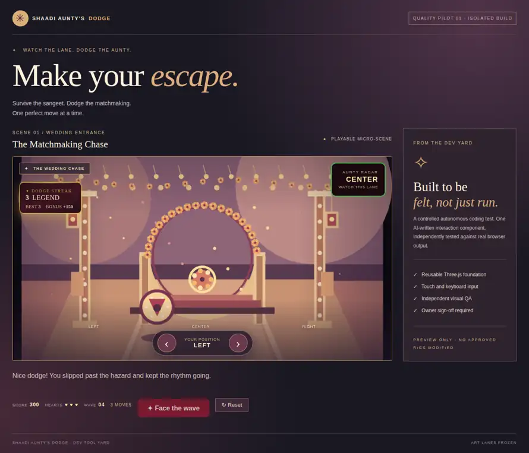
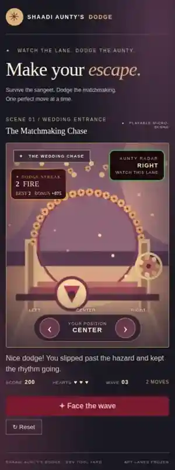

QA CERTIFIED · LANE 1 · VERSION a32f184
Dodge Streak — playable preview.
Face the wave, dodge the Aunty and build a combo from Spark to Fire to Legend. This is the latest isolated QA pilot, not approved production artwork.
52/52BROWSER TESTS
16/16GAME LOGIC TESTS
17/17VISUAL QUALITY
3/3EXTRA MOBILE SIZES
Owner artistic approval remains pending. No merge into production, no character-rig modification. The art lanes remain frozen.
Actual game screenshots
Desktop · Legend combo

Mobile · Fire combo

Additional captures: 320px phone · landscape. This preview uses a version-pinned Three.js CDN and contains no Dell credentials, private repo files or production assets.